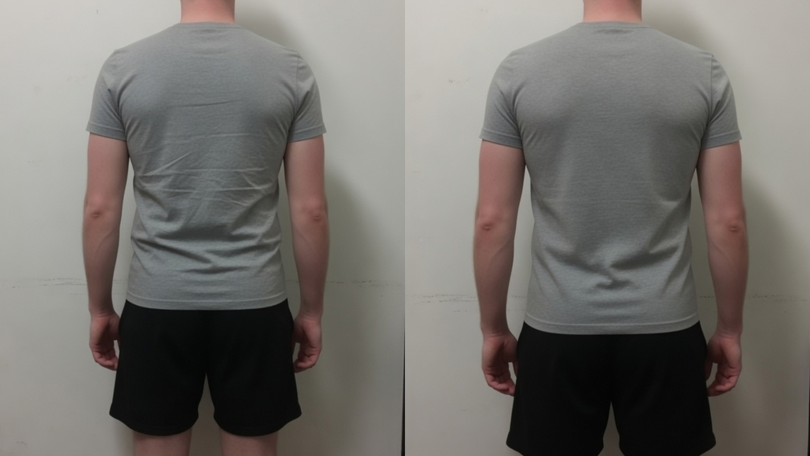
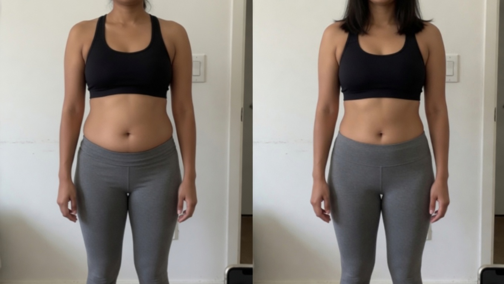
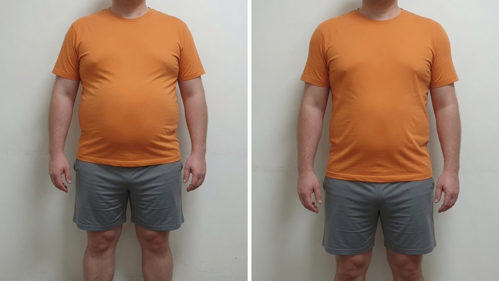
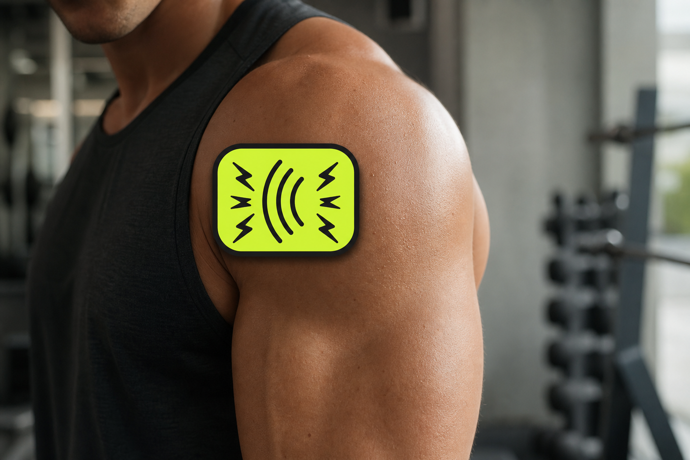
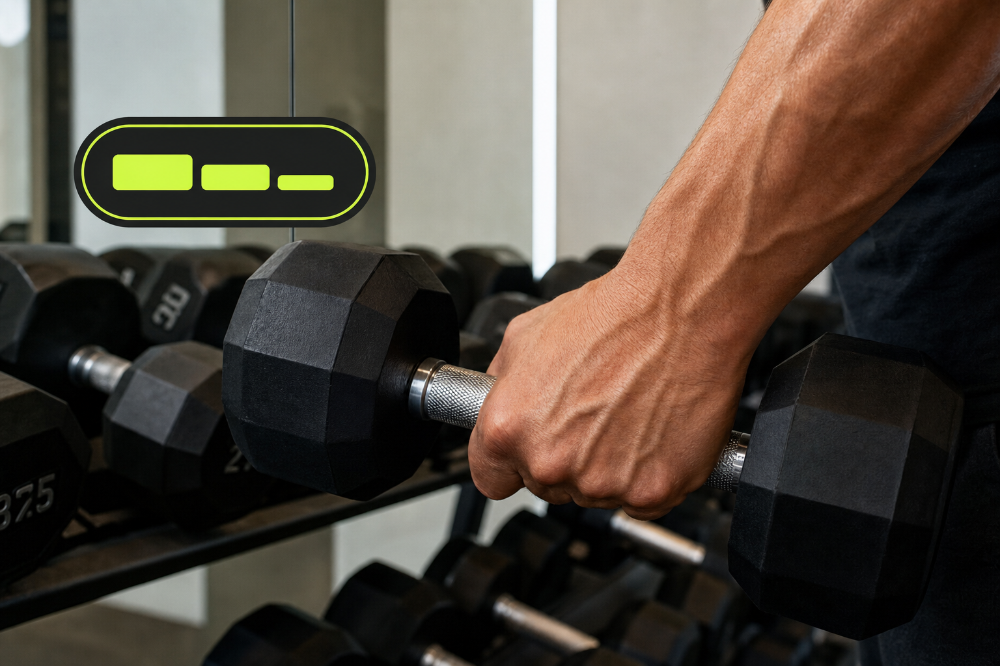

Beginners
Foundation 12
Twelve weeks, technique first—barbell patterns you can repeat before load climbs.
Learn moreToronto Science-Based Strength Coaching
Kinesiology-informed physique coaching for people who want visible progress, better technique, and smarter training without reckless loading.
Signature paths
Structured coaching tracks—not app templates. Choose the path that matches where you are today.
Beginners
Twelve weeks, technique first—barbell patterns you can repeat before load climbs.
Learn moreReturning lifters
Rebuild squat and hinge after time away—small steps, no ego resets.
Learn moreBusy schedules
Two or three effective sessions per week when work owns the calendar.
Learn morePosture, range of motion, injury history, training age, recovery profile, and goal mapping.
Exercise selection, structured split, progression model, and practical nutrition framework.
Performance, effort, and recovery tracking with changes based on how your body responds.

About your coach
Toronto strength and physique coach with 15+ years of experience and a kinesiology-based approach to hypertrophy and strength.
I work with beginners, returning lifters, and busy adults who want visible muscle without random workouts or reckless loading—movement assessment, clear progression, and adjustments based on how you actually recover.
How we work together—in the gym, hybrid, or online. Pair any format with an author program.
Hands-on strength and hypertrophy coaching at Fortis Fitness or Fit Squad Training Gym.
Learn MoreTechnique work in the gym plus remote programming, check-ins, and training adjustments.
Learn MoreEvidence-based programming, exercise video review, and progress tracking with clear KPIs.
Learn MoreSimple nutrition targets for muscle gain, recomposition, and recovery without crash dieting.
Learn MoreReal people. Clear training. Progress built through consistency and smart progression.
Zero barbell consistency before we started. Upper/lower split, technique first, then load. Chest and shoulders filled in; numbers climbed in small weekly steps.
Foundation 12 program
“I finally stopped guessing. I walk in knowing exactly what I am doing that day.” — Alex
Read full case studyDowntown schedule, recomposition goal. Hands-on at Fit Squad plus online programming. Waist down, shoulders and legs fuller; pull-ups to full reps.
Minimum Dose program
“Hybrid was the only honest fit for my job.” — Priya
Read full case study18 months off consistent lifting; low-back history managed with clinical clearance. Rebuilt squat and hinge, small weekly steps. Stable baseline, month-five photos and loads up.
Return Protocol program
“I needed progressions I could trust.” — Chris
Read full case studyTraining insights
Practical notes on hypertrophy, workload, and how I think about adaptation for lifters at every stage.

Why DOMS is an unreliable compass—and why a subdued week might still indicate intelligent coaching instead of catastrophe.
Read more
Busy schedules thrive on repeatable weekly stimulus rather than burnout volume—ideas for structuring two or three effective sessions around real life constraints.
Read moreManaging ego, reloading tendons calmly, rebuilding staple lifts, and spotting when humility unlocks quicker progress than brute force resets.
Read moreTell me your goal, current level, and preferred training format. I’ll map the clearest next step.